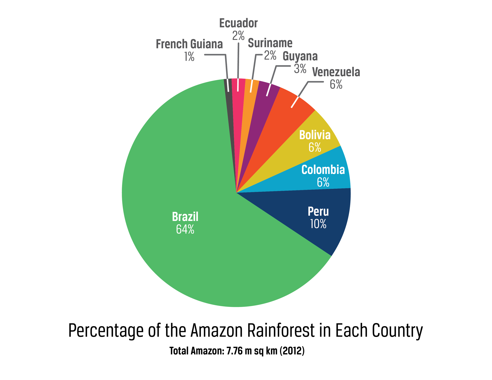
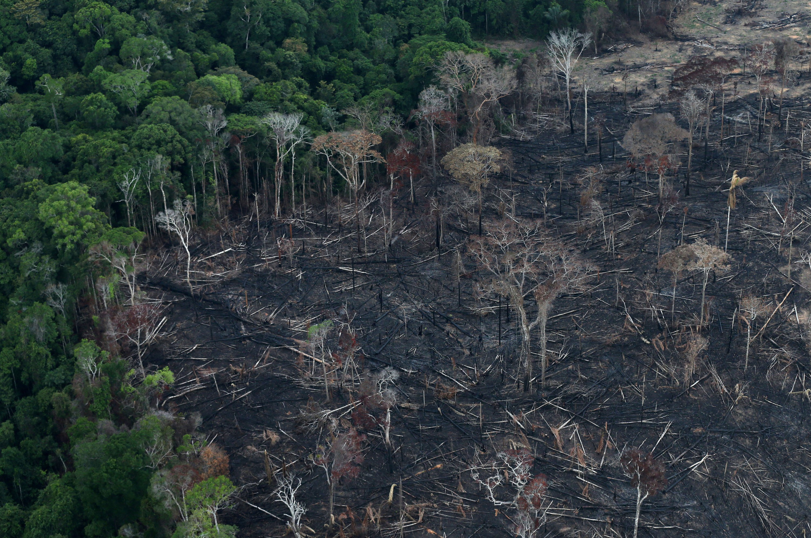
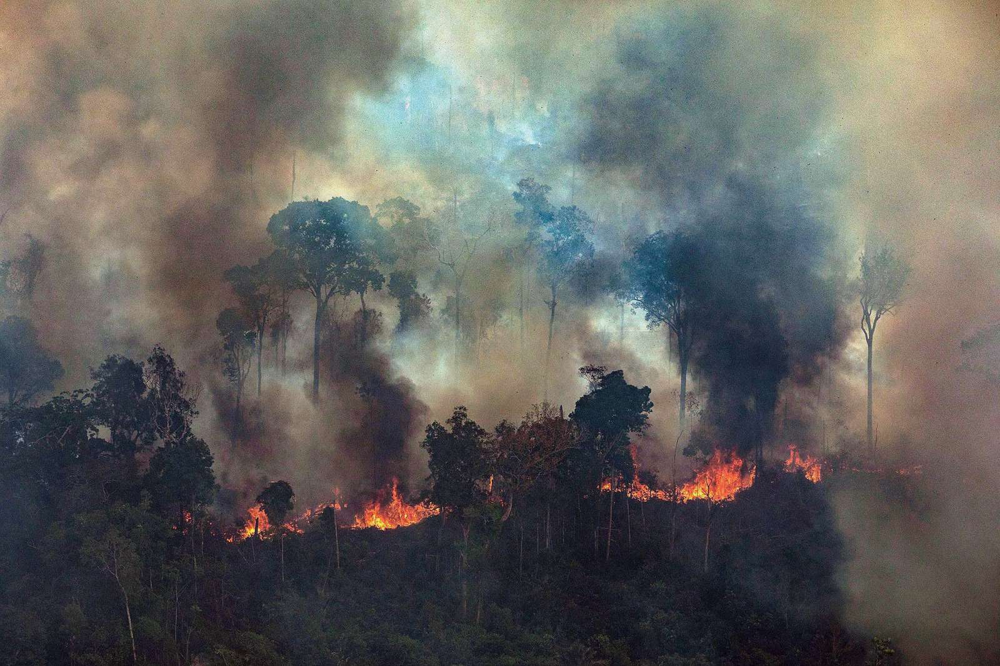
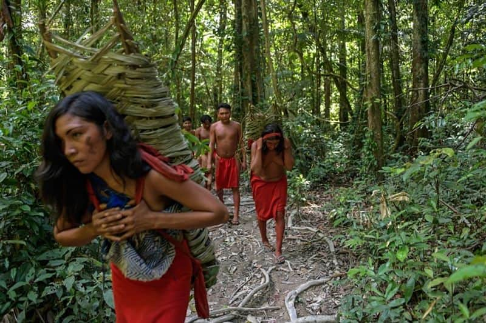
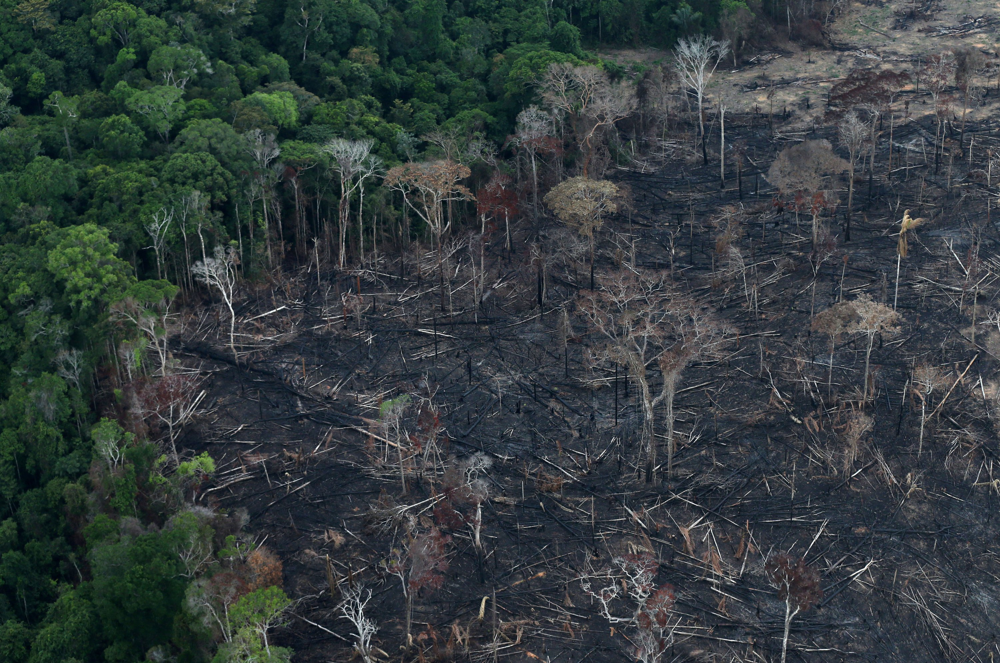
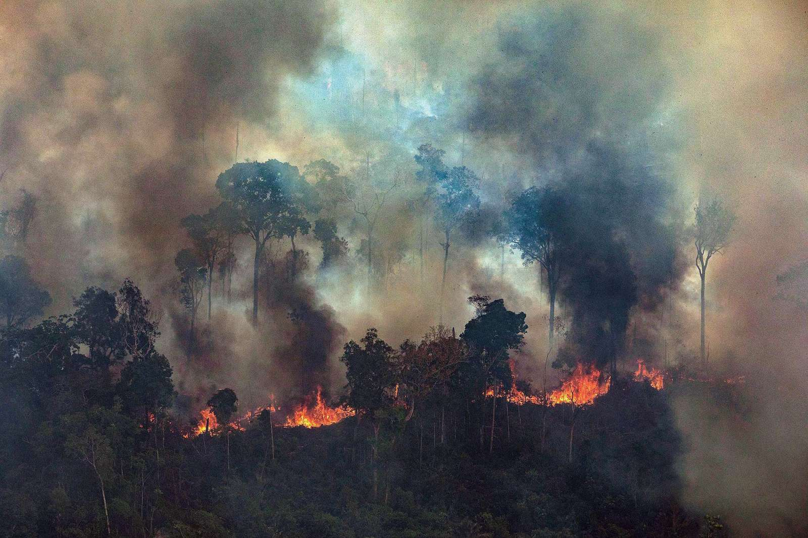
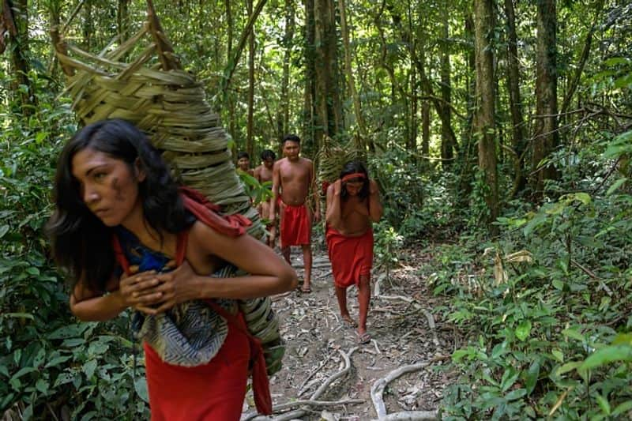

The reasons for deforestation in the Amazon:
- Agriculture (Soy, Coffee, and Palm Oil): Amazon stands as a casualty of agriculture. Soybeans, coffee and palm oil are grown by both small and large-scale farmers. Unfortunately, though, this clearing often involves felling huge forests.
- Logging: Logging operations, legal and illegal, contribute to deforestation. The demand for timber fuels this practice, even when it violates protective regulations. The allure of profits makes it challenging to safeguard forest resources effectively.
- Fires: Fires play a destructive role in deforestation. Whether intentionally set for land clearance or accidentally spreading out of control, these blazes consume large portions of the forest. Uncontrolled wildfires exacerbate the problem.
- Infrastructure Development: The expansion of infrastructure—roads, highways, and hydroelectric dams—requires clearing extensive forested land. These projects facilitate access to previously untouched areas, leading to further deforestation.
|

|


 




